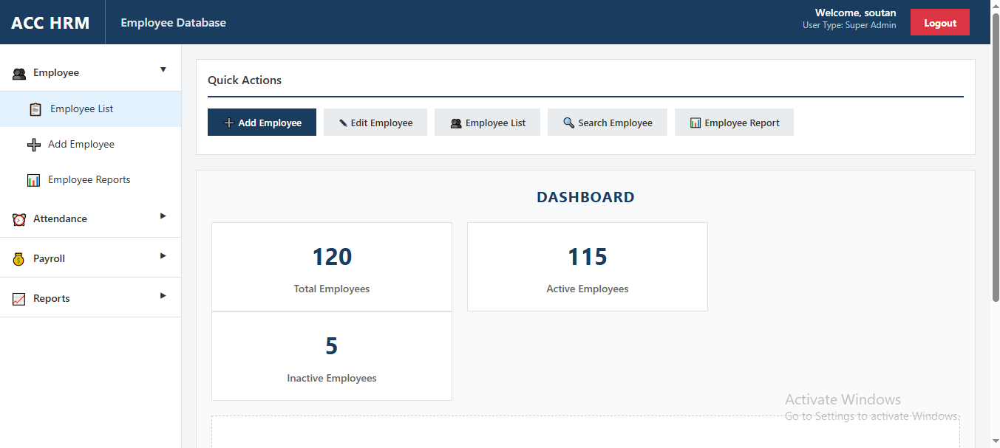

ACC HRM
A web-based HRM application built with ASP.NET and MS SQL Server, covering the core employee database — with the application deployed and served through IIS.
Features
- Employee database with core HR records
- Database connectivity between the ASP.NET app and MS SQL Server
- IIS deployment and hosting configuration
Screenshots


Technologies Used
ASP.NET, MS SQL Server, IIS (Internet Information Services)
Challenges & Learnings
The IIS deployment was necessarybut little hard to understand as there ws not a lot of guidance.